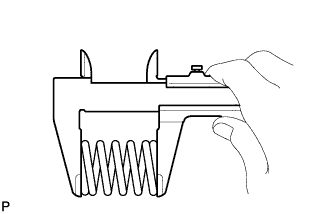

ВЫПУСКНАЯ ТРУБА (для моделей без DPF) > УСТАНОВКА |
| 1. УСТАНОВИТЕ ПРИЕМНУЮ ТРУБУ В СБОРЕ |
Закрепите приемную трубу с новой прокладкой на выпускном коллекторе с помощью 3 новых гаек.
| 2. УСТАНОВИТЕ ЦЕНТРАЛЬНУЮ ВЫПУСКНУЮ ТРУБУ В СБОРЕ |
|  |
При помощи штангенциркуля замерьте длину пружины сжатия в свободном состоянии.
 |
С помощью молотка с пластмассовым покрытием и деревянного бруска запрессуйте новую прокладку до тех пор, пока ее поверхность не окажется на одном уровне с приемной трубой в сборе.
| *1 | Прокладка |
| *2 | Деревянный брусок |
Для 3-дверных моделей:
Установите центральную выпускную трубу на 3 опоры выпускной трубы.
Для 5-дверных моделей:
Установите центральную выпускную трубу на 4 опоры выпускной трубы.
Закрепите центральную выпускную трубу и 2 пружины сжатия 2 болтами.
| 3. УСТАНОВИТЕ ВЫХЛОПНУЮ ТРУБУ В СБОРЕ |
Подсоедините выхлопную трубу к опоре выпускной трубы.
Установите новую прокладку на центральную выпускную трубу.
Подсоедините выхлопную трубу к центральной выпускной трубе.
Вверните 2 болта.
| 4. ПРОВЕРЬТЕ, НЕТ ЛИ УТЕЧЕК ОТРАБОТАВШИХ ГАЗОВ |